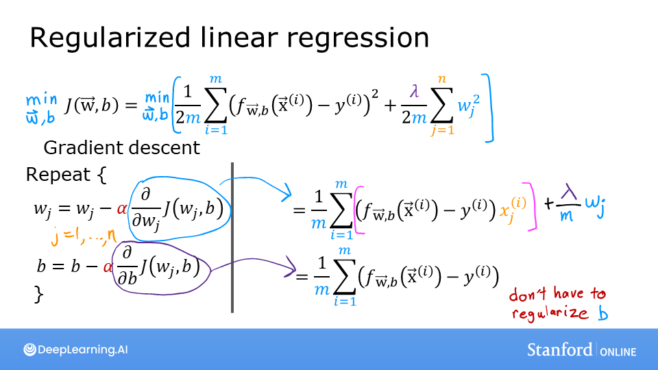

Code
import numpy as np
%matplotlib widget
import matplotlib.pyplot as plt
from plt_overfit import overfit_example, output
from lab_utils_common import sigmoid
np.set_printoptions(precision=8)kakamana
April 25, 2023
you’ll take a look at some examples of overfitting that you can adjust by clicking on the options in the plot. In the lab you’ll be able to add your own data points by clicking on the plot, and see how that changes the fitted curve.
You can try examples for both regression and classification. You can also change the degree of the polynomial to see how the curve either overfits or underfits the data.
This The problem of overfitting - Regularization is part of DeepLearning.AI course: Machine Learning Specialization / Course 1: Supervised Machine Learning: Regression and Classification In this course we will learn the difference between supervised and unsupervised learning and regression and classification tasks. Develop a linear regression model. Understand and implement the purpose of a cost function. Understand and implement gradient descent as a machine learning training method.
This is my learning experience of data science through DeepLearning.AI. These repository contributions are part of my learning journey through my graduate program masters of applied data sciences (MADS) at University Of Michigan, DeepLearning.AI, Coursera & DataCamp. You can find my similar articles & more stories at my medium & LinkedIn profile. I am available at kaggle & github blogs & github repos. Thank you for your motivation, support & valuable feedback.
These include projects, coursework & notebook which I learned through my data science journey. They are created for reproducible & future reference purpose only. All source code, slides or screenshot are intellectual property of respective content authors. If you find these contents beneficial, kindly consider learning subscription from DeepLearning.AI Subscription, Coursera, DataCamp
In this lab, you will: - extend the previous linear and logistic cost functions with a regularization term. - rerun the previous example of over-fitting with a regularization term added.

The slides above show the cost and gradient functions for both linear and logistic regression. Note: - Cost - The cost functions differ significantly between linear and logistic regression, but adding regularization to the equations is the same. - Gradient - The gradient functions for linear and logistic regression are very similar. They differ only in the implementation of \(f_{wb}\).
The equation for the cost function regularized linear regression is: \[J(\mathbf{w},b) = \frac{1}{2m} \sum\limits_{i = 0}^{m-1} (f_{\mathbf{w},b}(\mathbf{x}^{(i)}) - y^{(i)})^2 + \frac{\lambda}{2m} \sum_{j=0}^{n-1} w_j^2 \tag{1}\] where: \[ f_{\mathbf{w},b}(\mathbf{x}^{(i)}) = \mathbf{w} \cdot \mathbf{x}^{(i)} + b \tag{2} \]
Compare this to the cost function without regularization (which you implemented in a previous lab), which is of the form:
\[J(\mathbf{w},b) = \frac{1}{2m} \sum\limits_{i = 0}^{m-1} (f_{\mathbf{w},b}(\mathbf{x}^{(i)}) - y^{(i)})^2 \]
The difference is the regularization term, \(\frac{\lambda}{2m} \sum_{j=0}^{n-1} w_j^2\)
Including this term encourages gradient descent to minimize the size of the parameters. Note, in this example, the parameter \(b\) is not regularized. This is standard practice.
Below is an implementation of equations (1) and (2). Note that this uses a standard pattern for this course, a for loop over all m examples.
def compute_cost_linear_reg(X, y, w, b, lambda_ = 1):
"""
Computes the cost over all examples
Args:
X (ndarray (m,n): Data, m examples with n features
y (ndarray (m,)): target values
w (ndarray (n,)): model parameters
b (scalar) : model parameter
lambda_ (scalar): Controls amount of regularization
Returns:
total_cost (scalar): cost
"""
m = X.shape[0]
n = len(w)
cost = 0.
for i in range(m):
f_wb_i = np.dot(X[i], w) + b #(n,)(n,)=scalar, see np.dot
cost = cost + (f_wb_i - y[i])**2 #scalar
cost = cost / (2 * m) #scalar
reg_cost = 0
for j in range(n):
reg_cost += (w[j]**2) #scalar
reg_cost = (lambda_/(2*m)) * reg_cost #scalar
total_cost = cost + reg_cost #scalar
return total_cost #scalarRegularized cost: 0.07917239320214275For regularized logistic regression, the cost function is of the form \[J(\mathbf{w},b) = \frac{1}{m} \sum_{i=0}^{m-1} \left[ -y^{(i)} \log\left(f_{\mathbf{w},b}\left( \mathbf{x}^{(i)} \right) \right) - \left( 1 - y^{(i)}\right) \log \left( 1 - f_{\mathbf{w},b}\left( \mathbf{x}^{(i)} \right) \right) \right] + \frac{\lambda}{2m} \sum_{j=0}^{n-1} w_j^2 \tag{3}\] where: \[ f_{\mathbf{w},b}(\mathbf{x}^{(i)}) = sigmoid(\mathbf{w} \cdot \mathbf{x}^{(i)} + b) \tag{4} \]
Compare this to the cost function without regularization (which you implemented in a previous lab):
\[ J(\mathbf{w},b) = \frac{1}{m}\sum_{i=0}^{m-1} \left[ (-y^{(i)} \log\left(f_{\mathbf{w},b}\left( \mathbf{x}^{(i)} \right) \right) - \left( 1 - y^{(i)}\right) \log \left( 1 - f_{\mathbf{w},b}\left( \mathbf{x}^{(i)} \right) \right)\right] \]
As was the case in linear regression above, the difference is the regularization term, which is \(\frac{\lambda}{2m} \sum_{j=0}^{n-1} w_j^2\)
Including this term encourages gradient descent to minimize the size of the parameters. Note, in this example, the parameter \(b\) is not regularized. This is standard practice.
def compute_cost_logistic_reg(X, y, w, b, lambda_ = 1):
"""
Computes the cost over all examples
Args:
Args:
X (ndarray (m,n): Data, m examples with n features
y (ndarray (m,)): target values
w (ndarray (n,)): model parameters
b (scalar) : model parameter
lambda_ (scalar): Controls amount of regularization
Returns:
total_cost (scalar): cost
"""
m,n = X.shape
cost = 0.
for i in range(m):
z_i = np.dot(X[i], w) + b #(n,)(n,)=scalar, see np.dot
f_wb_i = sigmoid(z_i) #scalar
cost += -y[i]*np.log(f_wb_i) - (1-y[i])*np.log(1-f_wb_i) #scalar
cost = cost/m #scalar
reg_cost = 0
for j in range(n):
reg_cost += (w[j]**2) #scalar
reg_cost = (lambda_/(2*m)) * reg_cost #scalar
total_cost = cost + reg_cost #scalar
return total_cost #scalarRegularized cost: 0.6850849138741673The basic algorithm for running gradient descent does not change with regularization, it is: \[\begin{align*} &\text{repeat until convergence:} \; \lbrace \\ & \; \; \;w_j = w_j - \alpha \frac{\partial J(\mathbf{w},b)}{\partial w_j} \tag{1} \; & \text{for j := 0..n-1} \\ & \; \; \; \; \;b = b - \alpha \frac{\partial J(\mathbf{w},b)}{\partial b} \\ &\rbrace \end{align*}\] Where each iteration performs simultaneous updates on \(w_j\) for all \(j\).
What changes with regularization is computing the gradients.
The gradient calculation for both linear and logistic regression are nearly identical, differing only in computation of \(f_{\mathbf{w}b}\). \[\begin{align*} \frac{\partial J(\mathbf{w},b)}{\partial w_j} &= \frac{1}{m} \sum\limits_{i = 0}^{m-1} (f_{\mathbf{w},b}(\mathbf{x}^{(i)}) - y^{(i)})x_{j}^{(i)} + \frac{\lambda}{m} w_j \tag{2} \\ \frac{\partial J(\mathbf{w},b)}{\partial b} &= \frac{1}{m} \sum\limits_{i = 0}^{m-1} (f_{\mathbf{w},b}(\mathbf{x}^{(i)}) - y^{(i)}) \tag{3} \end{align*}\]
m is the number of training examples in the data set
\(f_{\mathbf{w},b}(x^{(i)})\) is the model’s prediction, while \(y^{(i)}\) is the target
For a linear regression model \(f_{\mathbf{w},b}(x) = \mathbf{w} \cdot \mathbf{x} + b\)
For a logistic regression model \(z = \mathbf{w} \cdot \mathbf{x} + b\) \(f_{\mathbf{w},b}(x) = g(z)\) where \(g(z)\) is the sigmoid function: \(g(z) = \frac{1}{1+e^{-z}}\)
The term which adds regularization is the $ w_j $.
def compute_gradient_linear_reg(X, y, w, b, lambda_):
"""
Computes the gradient for linear regression
Args:
X (ndarray (m,n): Data, m examples with n features
y (ndarray (m,)): target values
w (ndarray (n,)): model parameters
b (scalar) : model parameter
lambda_ (scalar): Controls amount of regularization
Returns:
dj_dw (ndarray (n,)): The gradient of the cost w.r.t. the parameters w.
dj_db (scalar): The gradient of the cost w.r.t. the parameter b.
"""
m,n = X.shape #(number of examples, number of features)
dj_dw = np.zeros((n,))
dj_db = 0.
for i in range(m):
err = (np.dot(X[i], w) + b) - y[i]
for j in range(n):
dj_dw[j] = dj_dw[j] + err * X[i, j]
dj_db = dj_db + err
dj_dw = dj_dw / m
dj_db = dj_db / m
for j in range(n):
dj_dw[j] = dj_dw[j] + (lambda_/m) * w[j]
return dj_db, dj_dwnp.random.seed(1)
X_tmp = np.random.rand(5,3)
y_tmp = np.array([0,1,0,1,0])
w_tmp = np.random.rand(X_tmp.shape[1])
b_tmp = 0.5
lambda_tmp = 0.7
dj_db_tmp, dj_dw_tmp = compute_gradient_linear_reg(X_tmp, y_tmp, w_tmp, b_tmp, lambda_tmp)
print(f"dj_db: {dj_db_tmp}", )
print(f"Regularized dj_dw:\n {dj_dw_tmp.tolist()}", )dj_db: 0.6648774569425726
Regularized dj_dw:
[0.29653214748822276, 0.4911679625918033, 0.21645877535865857]def compute_gradient_logistic_reg(X, y, w, b, lambda_):
"""
Computes the gradient for linear regression
Args:
X (ndarray (m,n): Data, m examples with n features
y (ndarray (m,)): target values
w (ndarray (n,)): model parameters
b (scalar) : model parameter
lambda_ (scalar): Controls amount of regularization
Returns
dj_dw (ndarray Shape (n,)): The gradient of the cost w.r.t. the parameters w.
dj_db (scalar) : The gradient of the cost w.r.t. the parameter b.
"""
m,n = X.shape
dj_dw = np.zeros((n,)) #(n,)
dj_db = 0.0 #scalar
for i in range(m):
f_wb_i = sigmoid(np.dot(X[i],w) + b) #(n,)(n,)=scalar
err_i = f_wb_i - y[i] #scalar
for j in range(n):
dj_dw[j] = dj_dw[j] + err_i * X[i,j] #scalar
dj_db = dj_db + err_i
dj_dw = dj_dw/m #(n,)
dj_db = dj_db/m #scalar
for j in range(n):
dj_dw[j] = dj_dw[j] + (lambda_/m) * w[j]
return dj_db, dj_dwnp.random.seed(1)
X_tmp = np.random.rand(5,3)
y_tmp = np.array([0,1,0,1,0])
w_tmp = np.random.rand(X_tmp.shape[1])
b_tmp = 0.5
lambda_tmp = 0.7
dj_db_tmp, dj_dw_tmp = compute_gradient_logistic_reg(X_tmp, y_tmp, w_tmp, b_tmp, lambda_tmp)
print(f"dj_db: {dj_db_tmp}", )
print(f"Regularized dj_dw:\n {dj_dw_tmp.tolist()}", )dj_db: 0.341798994972791
Regularized dj_dw:
[0.17380012933994293, 0.32007507881566943, 0.10776313396851499]In the plot above, try out regularization on the previous example. In particular: - Categorical (logistic regression) - set degree to 6, lambda to 0 (no regularization), fit the data - now set lambda to 1 (increase regularization), fit the data, notice the difference. - Regression (linear regression) - try the same procedure.